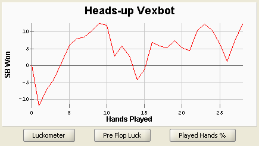

Bankroll Graph

The Bankroll Graph tab graphically plots a running total of
the selected player's winnings over all selected sessions.
If only one session is selected, the resulting graph is
straight-forward showing only the player's winnings for that
session. If more than one session is selected, the plot
shows the player's winnings in each selected session appended
one after the other session by session from left to right.
If not too many sessions are selected and plotted together,
each session will have blue dots indicating its start and
end points.
Graph Options
The way the Bankroll Graph is plotted can be customized.
These options allow you to customize the plot's units on both
the vertical axis (i.e. Units) and the horizontal axis
(i.e. Type).
Units
- $/h
- Dollars per Hand. This unit type should be used if
you want to see how an actual poker bankroll would have changed
over the selected sessions. For ring games, if you select
this unit type, the graph will show the selected player's winnings in
dollars. For tournaments, this unit type causes the graph to map the
selected player's tournament chips throughout a tournament session to
predicted tournament winnings in dollars. This is done using a variant
of the Independent Chip Model (ICM). At
the start of each tournament there will be a sharp drop and this corresponds
to the rake taken to play the tournament. Also, while a tournament is
unfinished, it is plotted in gray and does not count toward the current
bankroll until it is is finished.
- sb/h
- Small Bets per Hand. A small bet is equal to a big
blind. When this unit type is selected, all of a player's winnings in a
hand are converted into a multiple of the size of the small bet for that
hand and then plotted. This type of unit is useful when you want to
view your win rate across sessions of games with different sized stakes.
It is important to be aware that for tournaments the size of the small bet
increases as the levels in a tournament increase. As a result, care should
be taken when interpreting a graph plotted using this unit type if the
sessions selected include both ring and tournament sessions.
- T/h
- Tournament Chips per Hand. This unit type is for when
you want to plot the size of your stack of tournament chips thoughout
a tournament. When this unit type is selected, the size of the big
blind is plotted alongside your tournament chip graph so you
can easily see the information together. Note, this option is only
available to be selected when your selected sessions are purely
tournaments and is best viewed a single tournament at a time.
Type
- Hands
- Changes the horizontal axis of the graph to be
in units of hands played.
- Sessions
- Changes the horizontal axis of the graph to
be in units of sessions played.
Graph Analysis
Luckometer -
plot the 'luck' of the cards for each hand shown in the graph. For additional
details a full description of the luckometer is
provided.
Pre-flop luck -
plots a graph of how strong your starting hands have been, on
a percentage scale, where 50% would be an average starting hand.
Played Hands % -
shows how loose or tight you have been playing pre-flop. This
is also a percentage scale, so if you have been playing all hands, the graph would
rise to the top of the scale, while folding everything would have the graph fall
to the bottom.